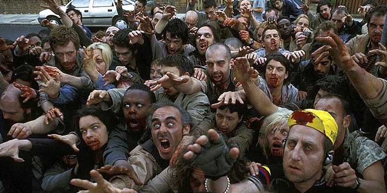
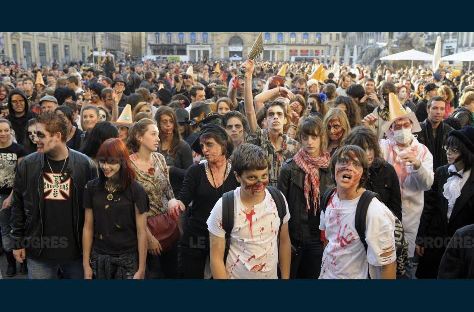
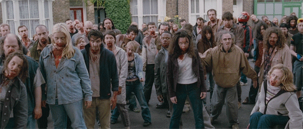

Scénario Spécial Haloween : Le dernier mouvement en jaune
Le rassemblement des gilets jaunes annonce leur ultime mouvement à Saint-Étienne et partout dans la France. Le point de départ bourse de travail à 15 heures. Mais il semblerait que la foule soit vraiment en furie pour cette dernière croisade.
Agathe (Val) et Farid (Adrien)
Agathe profite de cette belle journée un peu fraîche et conduit son enfant à l'école, aujourd'hui il y a un petit spectacle dans lequel ses enfants jouent un rôle majeur. Il est environ 16 h, la pièce est bientôt fini quand un murmure commence doucement à s'élever dans la foule. Apparemment la foule de gilet jaune semble être très agressive et les forces de l'ordre semblent les avoir rejoints cette fois si après avoir tenté de les arrêter une 1er fois. Un groupe de gilet jaune semble se diriger vers l'école et le concierge à verrouiller les grilles pour la sécurité des enfants.
Farid de son coté était aussi dans l’école pour son enfant. Car la pièce semblait interécole avec celle de son gamin. Doucement, mais de plus en plus puissant, on entend les sirènes de la mairie raisonner !
L'école est entourée par des gilets jaunes et des policiers. Certains gilets jaunes semblent gravement blessé, et petit à petit l'on constate alors, que ce ne sont pas des gilets jaunes...ce sont des morts-vivants jaunes.
Les telephone fonctionne mal et internet semble galerer aussi.
Max (Vincent) et Bidouf (Vincent)
Bidouf est dans la salle de pause quand le grend chef des pompiers demande une réunion de crise de toute urgence. Apparemment la manif se passe mal et y a des incendies qui commencent à démarrer dans toute la ville.Les pompiers sont envoyé donc en équiper vers tous les points chauds de la ville.Toi bidouf tes dans l'équipe Jeans Jaures. Tu t'équipes et tu montes dans un des camions.
Max était vers Jeans Jaures pour prendre des photos des manifestants. Placer sur le balcon de la mairie, il a assisté à l'arrivée furieuse des gilets jaunes, qui se mettait à agresser tout le monde, il a vu les policiers chargés, et se faire attaquer et...rejoindre la manif ? tout est mortalité dans son appareil photo. Impuissant il a assisté en sécurité sur le balcon à cette débandade, et à voir les incendies démarré, lancer sur les foules, les battements. Une véritable panique.
c'est sous les sirènes de la mairie que Max Appercois un camion de pompiers se faire percuter par un bus.Bidouf, tu es secoué mais tu n'as rien de grave, tu étais ien attaché mais ton camion de pompier est sur le flanc. Tu t'extracte comme tu peux.Max, tu te serais dit que c'était peut-être le camion de ton collègue et tu es aller aider. Ensemble vous constatez alors que la situation est critique. La foule grossit et semble se diriger vers vous. Avec quelque civil paniqué et pompier désorienter vous courez pour échappé à la foule et finisseur par prendre refuche dans la cathédrale qui ferme ses grosses portes a la foule de gilet jaune dans une dernière image d'horreur.
Les telephone fonctionne mal et internet semble galerer aussi.
Papy (Nico) et Mafioso (Romain)
romain tu étais convoqué dans le bureau de ton patron pour bonne conduite et parler augmentation. Le bar est fermé à cette heure si. Vos etes que vous deux quant à la radio cela parle de la manif et que cela tourne au vinaigre. Qu'il est demandé de rester au calme et de ne pas sortir.Cela fait rire ton patron et vous négocier un meilleur salaire.Soudain cela frappe à la porte avec des crie de panique"*Laissez-nous entrer par pitié! ils vont nous tuer !"
Nico tu était dans la rue non loin du Salon avec ton colis de mille feuille habituelle quand une foule a commencer a ce diriger vers toi venant de republique. Tu a decider de faire rebrousse chemin, inquiet de cette foule qui semble extremement virulente. tu vois quelque civil frappé a divers logement, jusqua ce qu'une porte s'ouvre, vers le vil de nuit. Une armoire a glace te fait entré alors que retentie les sirene de la ville, et avec une dernier vision sur la foule derrière vous.
Les telephone fonctionne mal et internet semble galerer aussi.
Artiste (antho) et Militaire (Pierre)
Vous eties tout les deux entrain de travailler sur les armes ou vous entrainer dans le stand de tir quand à la télé un reportage montre les evenement des gilet jaunes, la patron de l'armurerie regarde les info et vous appel. Les gens s'attaque mutuellement, gilet jaune et policiers. Par reflexe, la patronne va verouiller la porte de la boutique et baissé le rideau de fer. Du moins, elle a essayé, car elle c'est fait happé les jambe le rideau de fer à moitié baissé, et vous l'entender hurlé et crié de douleur. Le militaire fini de baissé le rideau et vous agrippé des armes, pret a faire feu, vous voyais alors une foule s'exité sur le bareau de fer tendis que la sirene retentie dans la ville.

Les telephone fonctionne mal et internet semble galerer aussi.